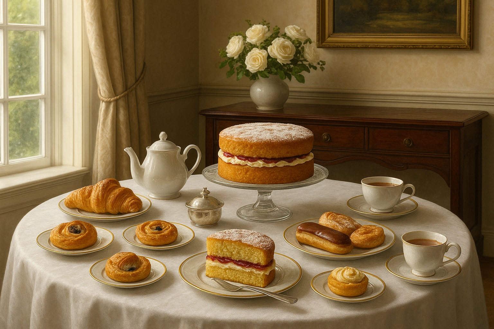
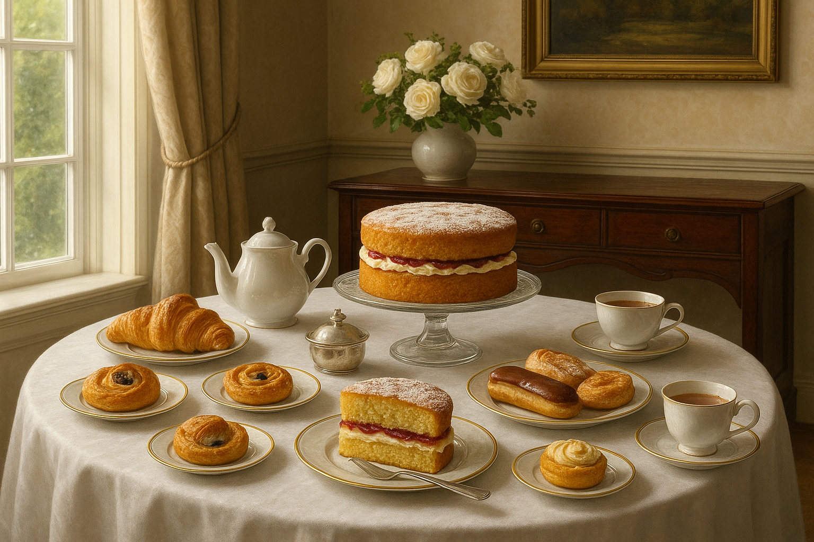

5 km Hyggeløb
Dato: Hver lørdag året rundt
Startsted: Vi aftaler på dagen, om det bliver Damhusengen, Fælledparken, Amager Strand eller Amager Fælled
En hyggelig rute gennem parker – perfekt for både begyndere, letøvede og øvede. Efter løbet vil der være kaffe og kage i klubhuset på Frederiksberg.
Tilmelding: Tilmelding til Parkrun i København sker på deres hjemmeside ved at trykke på tilmeldingsknappen nedenfor.